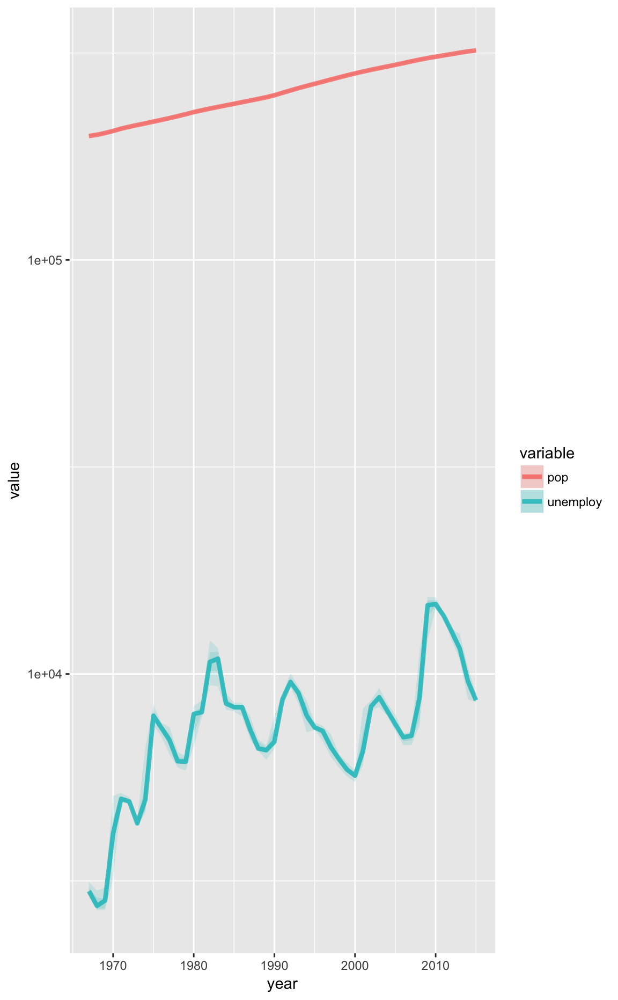

Miscellaneous Examples
Doug Kelkhoff
2018-03-30 21:40:21
library(dplyr)##
## Attaching package: 'dplyr'## The following objects are masked from 'package:stats':
##
## filter, lag## The following objects are masked from 'package:base':
##
## intersect, setdiff, setequal, unionlibrary(ggplot2)Dot Matrix Plots
ggpk_dot_matrix <- function(width = 10, ...) {
ggpack(geom_point,
data = . %>% mutate(
xvar = (1:nrow(.)-1) %% width,
yvar = (1:nrow(.)-1) %/% width),
x = xvar,
y = yvar,
...) +
ggpack(theme_void) +
ggpack(coord_fixed)
}diamonds %>%
sample_frac(0.01) %>%
arrange(cut) %>%
ggplot() +
aes(color = cut) +
ggpk_dot_matrix(width = 30, size = 3)
Tukey Ribbons
ggpk_tukey_ribbons <- function(...) {
# Tukey Box Edges
ggpack(geom_ribbon, id = list(NULL, 'box'),
stat = 'summary',
fun.data = function(d) c(
y = median(d),
ymax = quantile(d, 0.75, names = FALSE),
ymin = quantile(d, 0.25, names = FALSE)),
alpha = 0.15,
...,
fill = ..color..,
color = NA) +
# Tukey Whiskers
ggpack(geom_ribbon, id = list(NULL, 'whisker'),
stat = 'summary',
fun.data = function(d) {
d <- sort(d)
c(y = median(d),
ymax = d[tail(which(d <
quantile(d, 0.75, names = FALSE)
+ 1.5 * IQR(d)), 1)],
ymin = d[head(which(d >
quantile(d, 0.25, names = FALSE)
- 1.5 * IQR(d)), 1)])
},
alpha = 0.15,
...,
fill = ..color..,
color = NA) +
# Median Line
ggpack(geom_line, id = list(NULL, 'line'),
stat = 'summary',
fun.data = function(d) c(y = median(d)),
alpha = 0.8,
size = 1.5,
...)
}economics_long %>%
filter(variable %in% c('pop', 'unemploy')) %>%
mutate(year = as.integer(format(as.Date(date, format="%Y-%m-%d"),"%Y"))) %>%
ggplot() + aes(x = year, y = value, color = variable) +
ggpk_tukey_ribbons() +
scale_y_log10()